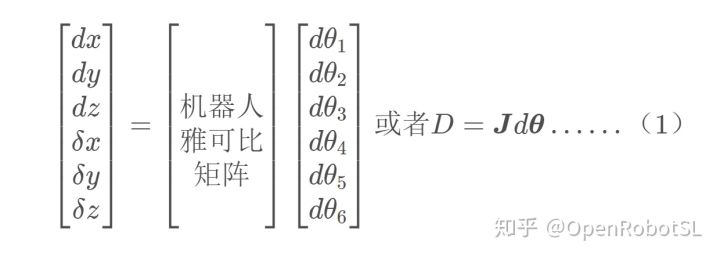
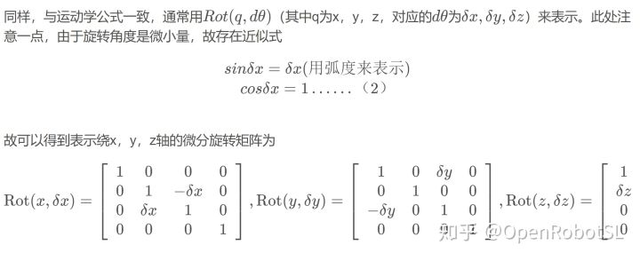
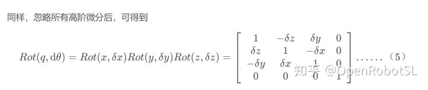
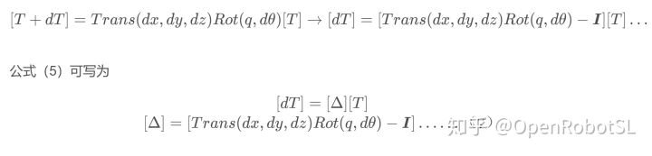
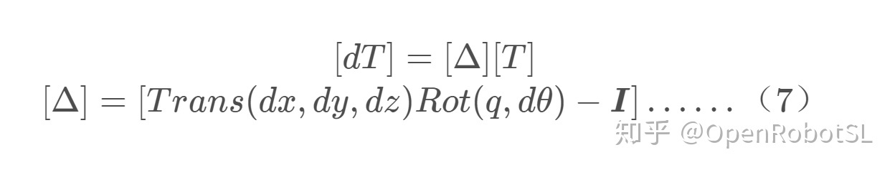
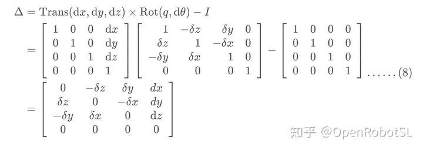
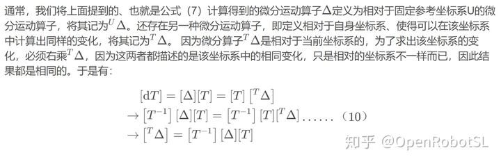

Home
写在前面
微分运动指机构（例如机器人）的微小运动，可以用它来推导不同部件之间的速度关系。依据定义，微分运动就是微小的运动。因此，如果能够在一个很小的时间段内测量或者计算这个运动，就能得到速度关系。
为啥想讲讲这个微分运动呢，其实我的目的很简单，和雅可比矩阵联系上，进而帮助解决机械臂的逆运动学问题。当机器人关节做微量运动时，机器人手坐标系也会产生微量运动。而前面博客讲机器人雅可比矩阵已经讲到，这是机器人关节速度与末端机械手（末端坐标系）速度之间的映射，由于微分运动除以dt即可得到速度，因此可以说雅可比矩阵是机器人关节微分运动与末端微分运动之间的映射。当计算得到机器人末端坐标系的微分运动时，通过雅可比矩阵，则能计算得到各关节的微分运动，能解决逆运动学及速度控制的问题。以六轴机器人为例，

其中，D=[dx,dy,dz,δx,δy,δz]表示六轴机器人末端机械手坐标的微分运动，前三项表示机械手坐标沿x，y，z轴的微分平移，后三项表示绕这三个轴的微分旋转；dθ表示各关节的微分运动
坐标系的微分运动
此处探讨的微分运动是基于坐标系而言的，再细化一下，对于本博客而言，是基于机器人末端坐标系而言的。
坐标系的微分运动可以分为：微分平移、微分旋转、微分变换（平移和旋转的组合）。其中微分旋转还分为绕参考轴xyz的微分旋转和绕一般轴q的微分旋转。
微分平移
很简单，就是坐标系原点平移一个微分量，和之前的运动学公式一致，只是将参数改为微分量，可以用Trans(dx,dy,dz)来表示，其含义是坐标系原点沿着x，y，z轴做了微小平移。
绕参考轴xyz的微分旋转

例如δxδy这样的高阶微分可忽略不计，故可将其略去，因此通过计算可以看出，几个微分运动以不同的顺序相乘可以得到同样的结果。因此在微分运动中，可认为相乘的顺序不重要。这与前面大角度旋转顺序不能交换的原则不一样。
绕一般轴q的微分旋转
上面分析可知，在微分运动中，任意相乘的顺序都能得到同样的结果。因此，可认为绕一般轴q的微分旋转运动可以表示以任意顺序绕3个坐标轴的3个微分旋转构成，如下

坐标系的微分变换
坐标系的微分变换是微分平移和以任意次序进行微分旋转的合成。用T表示微分变换前的坐标系位姿，这里默认T为相对于固定参考坐标系（基系）的位姿，下同，如果用位姿间的增量来进行表示的话，即用dT表示由于微分变换所引起的原坐标系T的变化量，T[dx,dy,dz,δx,δy,δz]T是相对固定参考系（基系）的，则可以得到我们定义的位姿微分变化量，有

公式（5）可写为

我们将Δ称为微分运动算子，坐标系的变化可以用微分运动算子乘以坐标系来实现，这个算子并不是我们之前讲的变换矩阵或者坐标系，它只是一个算子，使坐标系实现微分变化。其公式及具体计算式为
前面讲到的d T dTdT为通过微分变换后原坐标系T的变化量，则结合Δ \DeltaΔ，可以计算得到经过微分变换后坐标系新位姿为

微分运动算子：相对于固定参考坐标系、相对于自身坐标系

由式(10)可以计算得到相对于当前坐标系（本身坐标系）的微分算子。
上面谈到的都是坐标系的微分变化，这个坐标系可以是任意坐标系，包括机器人末端坐标系。下面的问题就是找出机器人关节的微分运动与机器人末端坐标系的微分运动是如何相关联的。从公式(1)中可以看出，向量D和微分算子Δ \DeltaΔ中元素相同，由此可以得到向量D，再通过雅可比取逆计算，则可得到机器人关节的微分运动。
至此，已将坐标系的微分运动与机器人的微分运动相互联系了起来。
======================================================================
我的测试结果及程序
下面是我测试的代码：